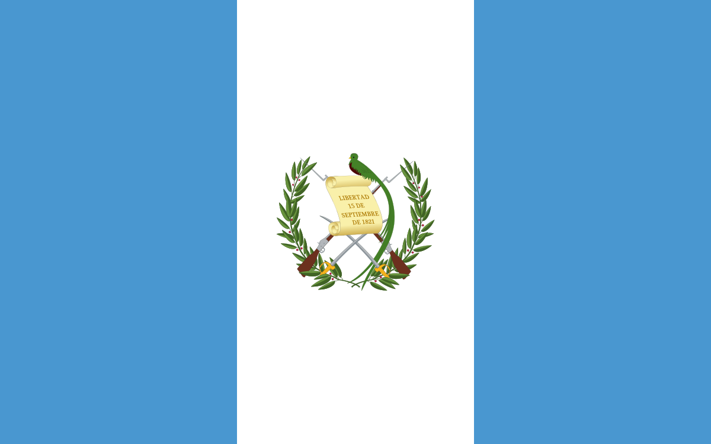

WDD 131: Dynamic Web Fundamentals - Marvin M. Canastuj
About Me
My name is Marvin. I was born in and I live in Guatemala.
I am currently working as Customer Service Representative.
I got married about 2 years ago and I love spending time with my wife.
I love to learn new things.
Guatemala, Guatemala

Official Flag of Guatemala
Guatemala officially the Republic of Guatemala, is a country in Central America. It is bordered to the north
and west by Mexico, to the northeast by Belize, to the east by Honduras, and to the southeast by El Salvador.
It is hydrologically bordered to the south by the Pacific Ocean and to the northeast by the Gulf of Honduras.